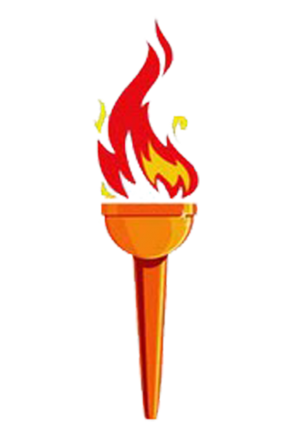
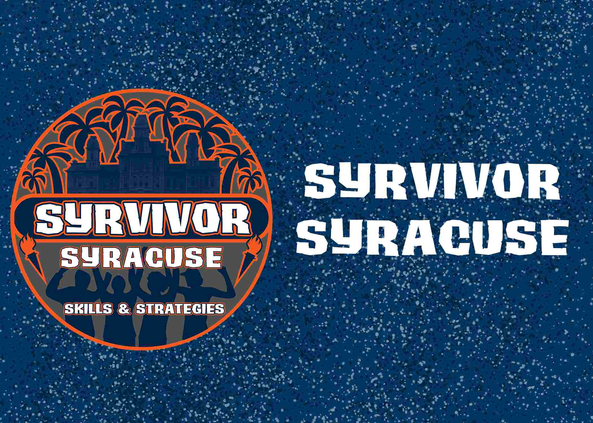
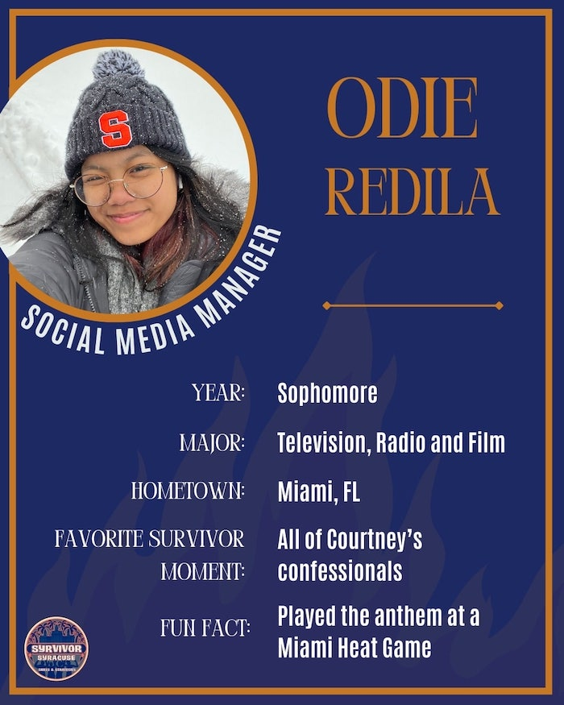
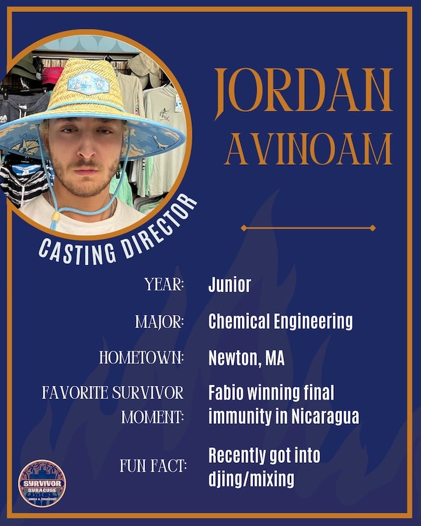
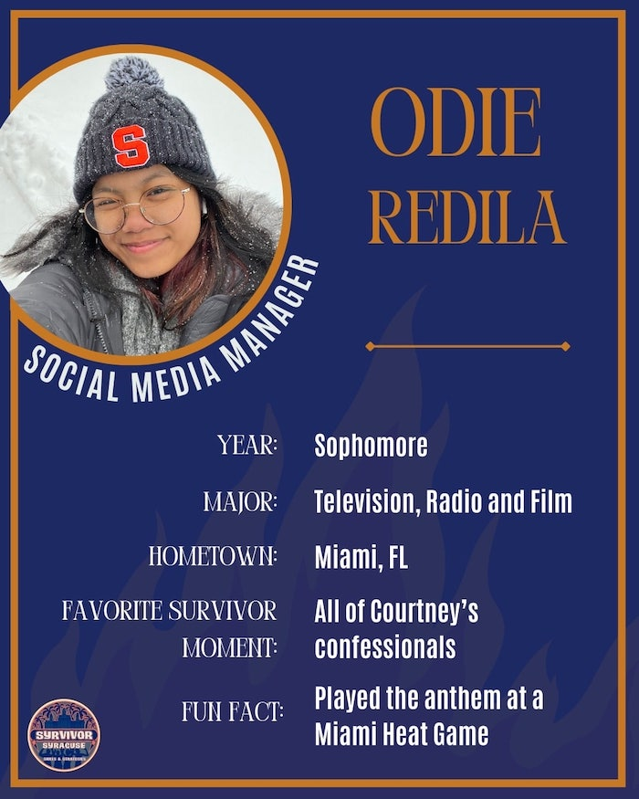
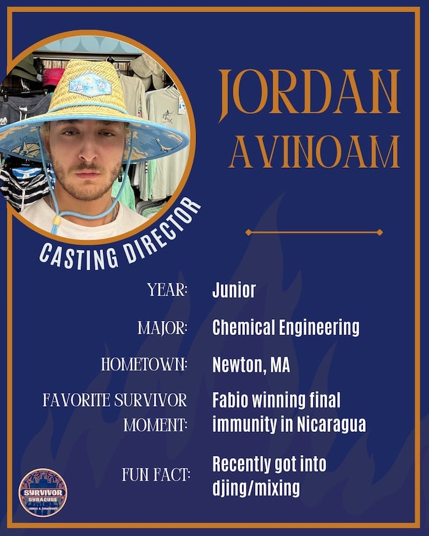

 18 STUDENTS, 75 DAYS, 1 SYRVIVOR
Syrvivor Syracuse is a recreational organization that focuses on challenging students to test themselves socially, mentally and physically in a semester-long competition based on the CBS reality show Survivor. The mission of this organization is to uniquely provide students with a competition that will put their skills to the test, while at the same time developing new relationships and building a strong community of Syracuse Students. Syrvivor Syracuse intends to accomplish such attributes through setting up competition based trials where participants partake in mental and physical challenges, team building/relationship cultivation, and strategic/social gameplay.
WHAT WE DO
Pre-Production
Any Syracuse student may apply through the applications posted during the casting stage. Applicants invited to an interview will meet the staff, and the selected participants of the final cast will be notified shortly after. The casting process will take place leading up to and one week into the start of each semester. Extensions may be announced, but don't count on it and apply ASAP!
Production
The season lasts the entirety of the semester, from the Meet & Greet on Day 1, until Finale Night when a Sole Syrvivor is decided. Contestants are split into teams, and teams that do not win immunity must vote one of their own members out. Once players merge into one team, all players vote every week, until the numbers slowly dwindle down. Contestants may meet one or multiple times a week depending on the status of the game. All strategizing and vlogging can be done on one's own time.
Post-Production
Episodes are released on the Syrvivor Syracuse YouTube channel, as well as Orange Television Network. Episodes contain the entirety of what went down, from the challenge to the vote-off to self-filmed vlogs where contestants spill all. Each episode covers at least one elimination, and sometimes more! Check out the live post-show for commentary from Production and potential appearances from the eliminated contestant.
MEET THE EXECUTIVE BOARD
 


